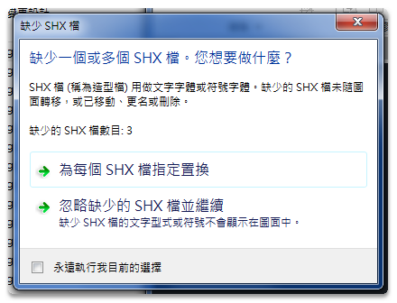
當在傳輸交流DWG圖檔時，我們必須提供對方圖檔相關聯的檔案（如:字體檔及大字體檔），對方才可以正常顯示圖面中所有文字內容，雖然可以透過「電子傳送」ETRANSMIT指令，自動將DWG圖檔所有字體檔打包成ZIP格式檔，連同DWG圖檔一併提供給對方，但有了字體檔使用者本身還是必須手動方式，放置到AutoCAD系統預設的字型支援路徑中，這樣開啟DWG圖檔才能正確找到字體顯示文字內容。
AutoCAD一直以來沒有自動指定替代「中文大字體檔(SHX)」功能，簡單說就是打開DWG圖檔後，圖面中若找不到的中文大字體，可透過介面設定以「chineset.shx」大字體暫時替換。目前使用者依預設當找不到中文大字體時，螢幕畫面會出現「替換字體」對話方塊，需以手動方式逐一選用「替代字體檔」，通常選用「chineset.shx」大字體暫時替換。
註:這邊的「暫時替換」意思是說，在目前圖面中暫時顯示正確文字內容而已，既有的文字型式大字體並不會替換，也就是說下次關閉AutoCAD後，再開啟圖檔或不同電腦開啟仍然需要手動方式選用「替代字體檔」。
所以目前業界選用「chineset.shx」大字體方式千其百種，在我的工作經歷及教學過程也提到了不少方式，但是截至目前為止AutoCAD仍然沒有一個簡單又有效率的方式，在這裡特別整理出心得與解決方法供大家參考，希望能對各界朋友在工作中能夠順利的解決替代大字體問題。
關於 DWG 圖檔中使用的文字字體，可以分別選用 Windows「TrueType字體」或 AutoCAD「SHX字體」這二種。
1、TrueType字體：使用者在 DWG 圖檔中比較常用的為「細明體」及「標楷體」
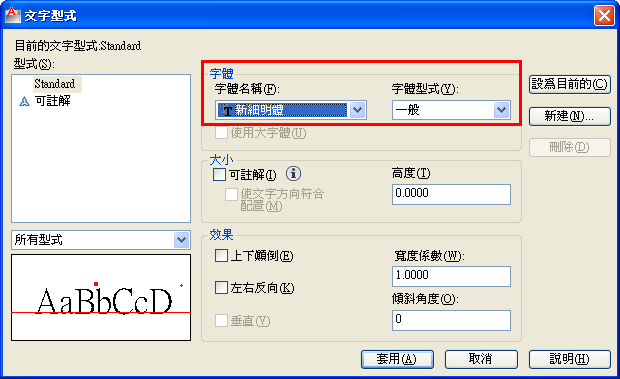
TrueType字體優點可以同時顯示「英文/數字/中文」，缺點若是圖面中大量使用相當耗資源，會造成開圖及改圖延遲緩慢等狀況。當您使用特殊TrueType字體（如:華康中黑體、全真中圓體等其他字體），在其他的使用者電腦中若沒有這些特殊字體，系統將自動使預設字體替換。
註:選用「TrueType字體」時，無法選擇大字體。
2、SHX字體：使用者在 DWG 圖檔中比較常用的依照預設為「txt字體」及「chineset大字體」這二種
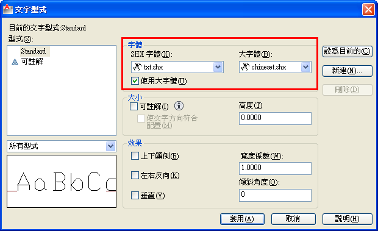
txt（字體檔）主要用於顯示「英文/數字」，chineset（大字體檔）則用來顯示「繁體中文」，一般「文字型式」使用「SHX字體」及「SHX大字體」組合，優點可以有效降低資源消耗，開圖及改圖不會有延遲緩慢等狀況。若是使用特殊SHX大字體（如:lsp.shx、china.shx等其他大字體），在其他的使用者電腦中若沒有這些特殊大字體，當開啟DWG圖檔時系統將會出現「替換字體」對話方塊，使用者需手動選擇替換大字體。
註:通常在亞洲使用SHX字體均需選用「大字體檔」，並依照不同版本語系選用不同的大字體檔（如:簡體中文字體gbcbig.shx 及 日文字體bigfont.shx 等其他字體）。
AutoCAD目前提供二種方式，依照不同的「字體」有不同的替代方法。
1、「替代字體檔」FONTALT系統變數：這個功能目的在自動替代電腦找不到的字體（TrueType字體及SHX字體），系統預設字體為 simplex(SHX字體)。
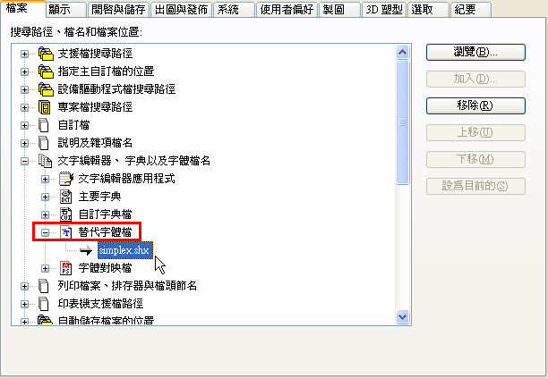
若是DWG圖檔中TrueType字體的文字字串內容為「英文/數字/中文」，多行文字(MTEXT)「英文/數字」部分會使用simplex.shx替代字體，「中文」部分會使用Windows中一個類似字體替換（如:細明體），單行文字(TEXT)「英文/數字」部分會使用simplex.shx替代字體，「中文」部分無法使用字體替換TrueType字體，文字內容則會以問號顯示。
註:FONTALT系統變數僅處理透過 MTEXT指令建立的文字。
二、「字體對映檔」FONTMAP系統變數：這個功能目的在於DWG圖檔關於中文的大字體檔替代
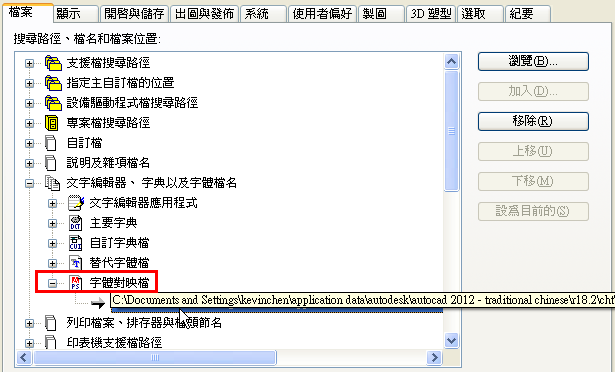
使用者可透過記事本開啟 acad.fmp（字體對映檔），加入對映行內容語法（lsp;chineset.shx），優點日後當電腦找不到的特殊SHX大字體（如:lsp.shx），會自動使用 chineset（大字體檔）替代，螢幕畫面不會出現「替換字體」對話方塊。
缺點若有五種以上大字體找不到，使用者本身需要自行逐一加入對映行內容語法，需要先開起DWG圖檔查詢找不到的特殊SHX大字體名稱。
2、新增大字體（@chineset.shx）
將預設的 chineset.shx（大字體檔），複製後在更名為「@chineset.shx」，目的在於日後開起DWG圖檔時找不到大字體檔，螢幕畫面出現「替換字體」對話方塊，利用檔名名稱排序特性，@chineset.shx大字體檔會置頂為第一個顯示，使用者只需要連續點選「確定」按鈕，不用花時間選用預設「chineset.shx」。
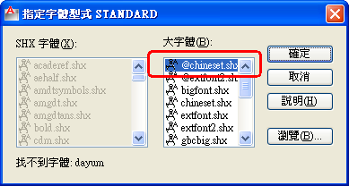
chineset.shx大字體檔位置:
C:\Program Files\AutoCAD *版本*\fonts（autocad 2011 以下版本）
C:\program files\autodesk\autocad 2012 - traditional chinese\fonts（autocad 2012 版本）
C:\program files\autodesk\autocad *版本*\fonts（autocad 2013 以上版本）
影片操作：
二、字體對映檔（FMP）
字體對映檔（FMP）為字體及其替換字體的清單。找不到圖面中使用的字體（SHX）時，會使用「字體對映檔」將缺少的字體替換為其他字體。請注意不是自動置換字體而是暫時替換取代字體。
字體對映檔位置:
XP系統： C:\Documents and Settings\使用者帳號\Application Data\Autodesk\AutoCAD 版本\版本代號\cht\support\acad.fmp
Win7以上系統： C:\Users\使用者帳號\appdata\roaming\autodesk\autocad 版本\版本代號\cht\support\acad.fmp
影片操作：
字體對映檔相關文章：
https://www.autocad-tw.com/t110-topic
三、開發程式（chinesetshx.lsp）
透過AutoLISP開發程式，將目前的DWG圖檔的所有文字型式的大字體，全部變更為「chineset.shx」大字體，日後不同的電腦或AutoCAD版本開啟DWG圖檔，都不需要再選用替換大字體。
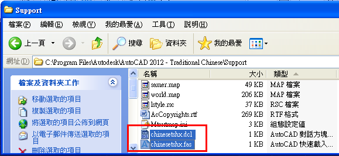
註:若是公司自己的圖檔有字型檔規範，建議將原始DWG圖檔另存後再執行程式，若為對方的圖檔則可以直接執行程式轉換（若有必要可以備份對方的原始DWG圖檔）。
影片操作：
四、自動替換大字型檔（CorelCAD）
1.使用自動選用替代大字型檔，透過「工具(T)」功能表 →「選項」→ 螢幕畫面中會出現「選項」視窗
2.「檔案位置(F)」→「工程圖支援」→「替換字型檔案」→「大字型」→「瀏覽」
3.請選擇預設的 chineset.shx 大字型檔 →「確定」，這樣日後 CorelCAD 將自動幫您選用替代大字型檔
4.確認指定好「大字型」，下次開圖就不再會出現 "找不到字型檔，請指定替代字型檔" 訊息
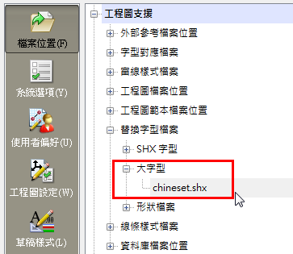
影片操作：
2019.09.05 補充: 如果圖面沒有顯示文字
1.一般輸入 STYLE 可以查看每個字體型式名稱，有黃色 ! 驚嘆號表示電腦中沒有此SHX字體，使用者需要手動指定替代字體(指定預設字體 chineset.shx)
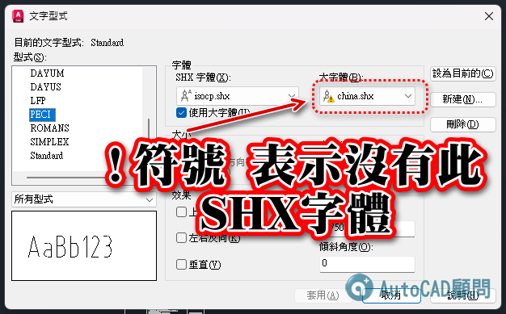
2.如果使用者勾選"永遠執行我目前的選擇"，並選擇「忽略缺少的SHX檔並繼續」
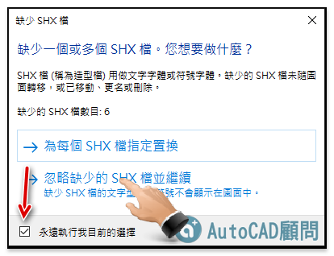
3.這樣下次遇到需要替換「SHX字體」的圖檔時，AutoCAD就不會再提示「替換SHX字體」，這樣會造成看不到圖面文字的問題
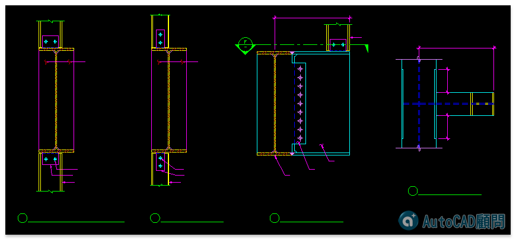
解決方法：只要再將訊息提示開啟即可顯示「替換SHX字體」訊息
「選項」→「系統」頁籤 → 一般選項「隱藏訊息設定」→ 打勾「缺少SHX檔」
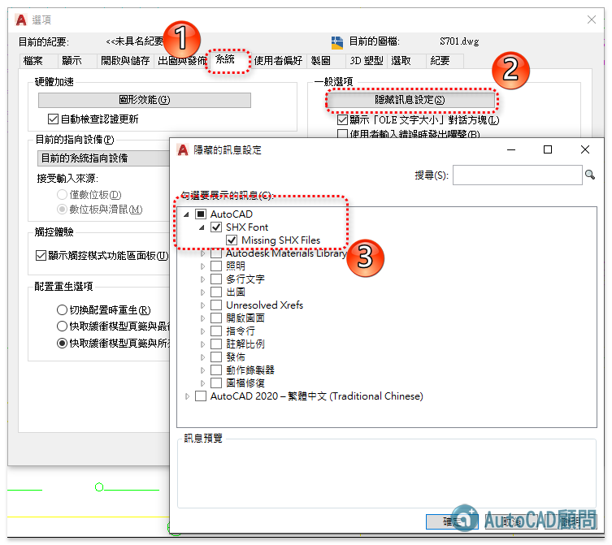
👇相關文章討論：
[討論]請問如何讓AUTOCAD開檔的速度加快及字型可以自動化!